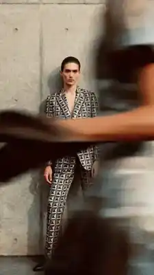

نمای تعقیبی قرینه
Symmetrical tracking shot

کلیدواژهٔ پرامپت
symmetrical tracking shot
نمای تعقیبی قرینه (Symmetrical tracking shot) از خانوادهٔ «حرکت دوربین» در واژهنامهٔ طراحی با هوش مصنوعی. کلیدواژهٔ پرامپت: symmetrical tracking shot. مناسب برای فیلم کوتاه داستانی، تبلیغات و عکس محصول.
نمونهٔ پرامپت
Camera movement: slow perfectly symmetrical tracking shot, camera moves in a direct straight axis advancing steadily forward to the subject, absolute center-frame composition maintained throughout, zero lateral drift, zero rotation, zero tilt. Subject remains perfectly centered in frame at all times. Ruler-straight dolly movement along the central axis.
- خانواده
- حرکت دوربین
- فرم
- ویدئو و حرکت
- نیاز
- فیلم کوتاه داستانی، تبلیغات و عکس محصول
- خاستگاه
- جهانی